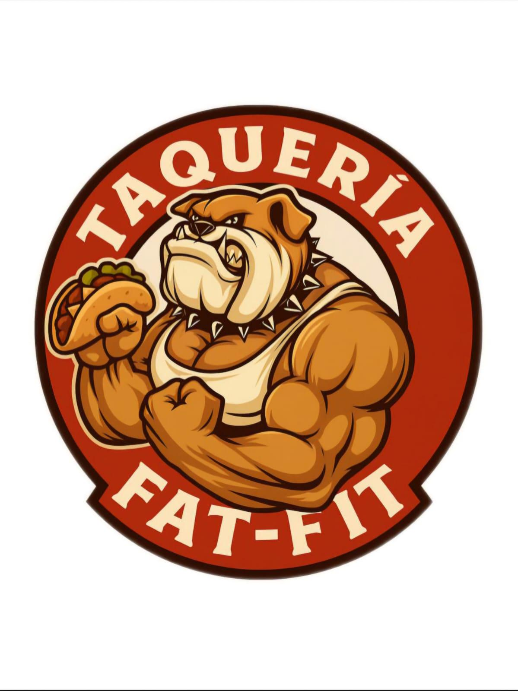

Site Name
Proposed Site Name: Taqueria Fat-Fit
The name represents a traditional neighborhood taco stand located on a street corner, a common and familiar concept in Mexican cities. It is easy to remember, culturally relevant, and clearly communicates the type of business.
Optional domain name: taqueriafat-fit.com
Site Purpose
The purpose of this website is to promote a local taco stand by providing essential information such as the menu, location, contact details, business history, promotions, and images of customers enjoying the food. The site will also help establish an official online presence for the business and serve as a foundation for future growth.
Scenarios
- What tacos and drinks are available, and what are their prices?
- Where is the taco stand located and what are the business hours?
- Are there any current promotions or special deals?
Color Schema
The selected colors reflect Mexican street food culture: warm, bold, and inviting.
- Chili Red (#C0392B): Used for headings, navigation, and accents.
- Corn Yellow (#F4D03F): Used for backgrounds, highlights, and buttons.
Typography
- Montserrat: Used for headings and navigation to create strong visual hierarchy.
- Open Sans: Used for body text for readability and accessibility.
Wireframes
Mobile View
+------------------+
| Logo |
+------------------+
| Navigation Menu |
+------------------+
| Hero Image |
+------------------+
| Menu Preview |
+------------------+
| Promotions |
+------------------+
| Location Map |
+------------------+
| Footer |
+------------------+
Desktop View
+--------------------------------------+
| Logo | Navigation Menu |
+--------------------------------------+
| Hero Image |
+--------------------------------------+
| Menu | Promotions |
+--------------------------------------+
| Gallery of Happy Customers |
+--------------------------------------+
| Location & Contact Information |
+--------------------------------------+
| Footer |
+--------------------------------------+
Reason for Choosing This Project
I chose this project because my sister is the owner of this taco stand, and I want to surprise her by creating a professional website for her business. This project also provides a meaningful opportunity to apply the HTML, CSS, and JavaScript skills learned in this course while developing a real-world product with long-term value.